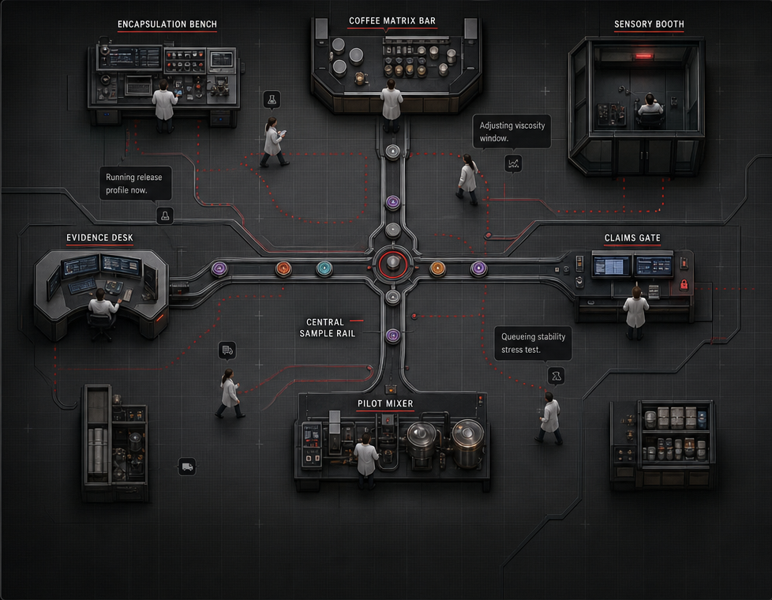

Current research objective
Find a manufacturable way to make creatine monohydrate dissolve quickly in hot coffee while keeping the coffee experience clean and maximising supplement absorption and performance.
Active experiment
Loading
Evidence gate
Hypothesis
